20 Day 20
library(tidyverse)
library(STRbook)
library(fields)
library(mvnfast)
library(fda)
library(spBayes)
library(coda)
library(mgcv)
library(glmnet)
library(microbenchmark)20.1 Announcements
20.2 spBayes example
Fitting a spatial model using the NOAA_df_1990 data.frame from the STRbook package. We will focus on the average max temperature for July 1990.
data("NOAA_df_1990")
## add a factor variable for left_join
NOAA_df_1990$id_factor <- factor(NOAA_df_1990$id)
dat <- NOAA_df_1990 %>%
subset(year == 1990 & month == 7 & proc == "Tmax") %>%
group_by(id_factor) %>%
summarize(mean_Tmax = mean(z)) #
## add back in the lat/lon variables
dat <- NOAA_df_1990 %>%
subset(year == 1990 & month == 7 & proc == "Tmax" & day == 1) %>%
left_join(dat, by = "id_factor") n.samples <- 5000
starting <- list(phi = 3/100, sigma.sq = 2, tau.sq = 2)
tuning <- list(phi = 2.5, sigma.sq = 0.1, tau.sq = 0.1)
p <- 3 ## use lat and lon as predictors (plus an intercept)
coords <- as.matrix(cbind(dat$lon, dat$lat))
max_dist <- max(rdist(coords))
priors <- list(
beta.Norm = list(rep(0, p), diag(1e+06, p)),
phi.Unif = c(0.01, 100),
sigma.sq.IG = c(2, 2),
tau.sq.IG = c(2, 2)
)
cov.model <- "exponential"
fit_e <- spLM(
dat$z ~ dat$lon + dat$lat,
coords = coords,
starting = starting,
tuning = tuning,
priors = priors,
cov.model = cov.model,
n.samples = n.samples,
n.report = 1000
)## ----------------------------------------
## General model description
## ----------------------------------------
## Model fit with 136 observations.
##
## Number of covariates 3 (including intercept if specified).
##
## Using the exponential spatial correlation model.
##
## Number of MCMC samples 5000.
##
## Priors and hyperpriors:
## beta normal:
## mu: 0.000 0.000 0.000
## cov:
## 1000000.000 0.000 0.000
## 0.000 1000000.000 0.000
## 0.000 0.000 1000000.000
##
## sigma.sq IG hyperpriors shape=2.00000 and scale=2.00000
## tau.sq IG hyperpriors shape=2.00000 and scale=2.00000
## phi Unif hyperpriors a=0.01000 and b=100.00000
## -------------------------------------------------
## Sampling
## -------------------------------------------------
## Sampled: 1000 of 5000, 20.00%
## Report interval Metrop. Acceptance rate: 12.20%
## Overall Metrop. Acceptance rate: 12.20%
## -------------------------------------------------
## Sampled: 2000 of 5000, 40.00%
## Report interval Metrop. Acceptance rate: 8.70%
## Overall Metrop. Acceptance rate: 10.45%
## -------------------------------------------------
## Sampled: 3000 of 5000, 60.00%
## Report interval Metrop. Acceptance rate: 11.00%
## Overall Metrop. Acceptance rate: 10.63%
## -------------------------------------------------
## Sampled: 4000 of 5000, 80.00%
## Report interval Metrop. Acceptance rate: 10.40%
## Overall Metrop. Acceptance rate: 10.57%
## -------------------------------------------------
## Sampled: 5000 of 5000, 100.00%
## Report interval Metrop. Acceptance rate: 11.50%
## Overall Metrop. Acceptance rate: 10.76%
## -------------------------------------------------The above fits the model. However, sometimes it is hard to “tune” the model to get the desired Metropolis acceptance rate. spLM has an option for adaptive MCMC tuning. To enable this option, we add an amcmc option. We are also going to change to a Matern covarince function in the next code as well.
n.samples <- 5000
batch.length <- 50
n.batch <- n.samples / batch.length
## must add in values for the smoothness paramter nu
starting <- list(phi = 3/100, sigma.sq = 2, tau.sq = 2, nu = 1)
tuning <- list(phi = 2.5, sigma.sq = 0.1, tau.sq = 0.1, nu = 0.1)
p <- 3 ## use lat and lon as predictors (plus an intercept)
coords <- as.matrix(cbind(dat$lon, dat$lat))
max_dist <- max(rdist(coords))
priors <- list(
beta.Norm = list(rep(0, p), diag(1e+06, p)),
phi.Unif = c(0.01, 100),
nu.Unif = c(0.01, 100),
sigma.sq.IG = c(2, 2),
tau.sq.IG = c(2, 2)
)
cov.model <- "matern"
fit_m <- spLM(
dat$z ~ dat$lon + dat$lat,
coords = coords,
starting = starting,
tuning = tuning,
priors = priors,
cov.model = cov.model,
n.samples = n.samples,
amcmc = list(
n.batch = n.batch,
batch.length = batch.length,
accept.rate = 0.44
),
n.report = 10 ## report every 10 adaptive batches
)
## can update the initial tuning parameters given the adapted values## ----------------------------------------
## General model description
## ----------------------------------------
## Model fit with 136 observations.
##
## Number of covariates 3 (including intercept if specified).
##
## Using the matern spatial correlation model.
##
## Using adaptive MCMC.
##
## Number of batches 100.
## Batch length 50.
## Target acceptance rate 0.44000.
##
## Priors and hyperpriors:
## beta normal:
## mu: 0.000 0.000 0.000
## cov:
## 1000000.000 0.000 0.000
## 0.000 1000000.000 0.000
## 0.000 0.000 1000000.000
##
## sigma.sq IG hyperpriors shape=2.00000 and scale=2.00000
## tau.sq IG hyperpriors shape=2.00000 and scale=2.00000
## phi Unif hyperpriors a=0.01000 and b=100.00000
## nu Unif hyperpriors a=0.01000 and b=100.00000
## -------------------------------------------------
## Sampling
## -------------------------------------------------
## Batch: 10 of 100, 10.00%
## parameter acceptance tuning
## sigma.sq 46.0 0.33578
## tau.sq 52.0 0.34949
## phi 6.0 1.43067
## nu 44.0 0.28613
## -------------------------------------------------
## Batch: 20 of 100, 20.00%
## parameter acceptance tuning
## sigma.sq 58.0 0.36375
## tau.sq 48.0 0.36375
## phi 6.0 1.29453
## nu 86.0 0.30997
## -------------------------------------------------
## Batch: 30 of 100, 30.00%
## parameter acceptance tuning
## sigma.sq 48.0 0.39404
## tau.sq 60.0 0.37859
## phi 8.0 1.17134
## nu 40.0 0.32913
## -------------------------------------------------
## Batch: 40 of 100, 40.00%
## parameter acceptance tuning
## sigma.sq 48.0 0.37859
## tau.sq 54.0 0.41841
## phi 12.0 1.05987
## nu 40.0 0.29781
## -------------------------------------------------
## Batch: 50 of 100, 50.00%
## parameter acceptance tuning
## sigma.sq 42.0 0.39404
## tau.sq 40.0 0.43549
## phi 18.0 0.95901
## nu 64.0 0.30997
## -------------------------------------------------
## Batch: 60 of 100, 60.00%
## parameter acceptance tuning
## sigma.sq 58.0 0.42686
## tau.sq 38.0 0.41013
## phi 18.0 0.86775
## nu 56.0 0.34257
## -------------------------------------------------
## Batch: 70 of 100, 70.00%
## parameter acceptance tuning
## sigma.sq 34.0 0.43549
## tau.sq 64.0 0.39404
## phi 26.0 0.78517
## nu 66.0 0.37859
## -------------------------------------------------
## Batch: 80 of 100, 80.00%
## parameter acceptance tuning
## sigma.sq 54.0 0.45326
## tau.sq 40.0 0.37859
## phi 22.0 0.71045
## nu 84.0 0.41841
## -------------------------------------------------
## Batch: 90 of 100, 90.00%
## parameter acceptance tuning
## sigma.sq 38.0 0.44428
## tau.sq 40.0 0.38624
## phi 22.0 0.64284
## nu 56.0 0.46241
## -------------------------------------------------
## Batch: 100 of 100, 100.00%
## parameter acceptance tuning
## sigma.sq 42.0 0.43549
## tau.sq 56.0 0.39404
## phi 32.0 0.58167
## nu 80.0 0.51105
## -------------------------------------------------tuning <- list(phi = 0.5, sigma.sq = 0.38, tau.sq = 0.6, nu = 0.3)
fit_m <- spLM(
dat$z ~ dat$lon + dat$lat,
coords = coords,
starting = starting,
tuning = tuning,
priors = priors,
cov.model = cov.model,
n.samples = n.samples,
amcmc = list(
n.batch = n.batch,
batch.length = batch.length,
accept.rate = 0.44
),
n.report = 10 ## report every 10 adaptive batches
)
## can update the initial tuning parameters given the adapted values## ----------------------------------------
## General model description
## ----------------------------------------
## Model fit with 136 observations.
##
## Number of covariates 3 (including intercept if specified).
##
## Using the matern spatial correlation model.
##
## Using adaptive MCMC.
##
## Number of batches 100.
## Batch length 50.
## Target acceptance rate 0.44000.
##
## Priors and hyperpriors:
## beta normal:
## mu: 0.000 0.000 0.000
## cov:
## 1000000.000 0.000 0.000
## 0.000 1000000.000 0.000
## 0.000 0.000 1000000.000
##
## sigma.sq IG hyperpriors shape=2.00000 and scale=2.00000
## tau.sq IG hyperpriors shape=2.00000 and scale=2.00000
## phi Unif hyperpriors a=0.01000 and b=100.00000
## nu Unif hyperpriors a=0.01000 and b=100.00000
## -------------------------------------------------
## Sampling
## -------------------------------------------------
## Batch: 10 of 100, 10.00%
## parameter acceptance tuning
## sigma.sq 40.0 0.55778
## tau.sq 28.0 0.79024
## phi 12.0 0.63982
## nu 24.0 0.49560
## -------------------------------------------------
## Batch: 20 of 100, 20.00%
## parameter acceptance tuning
## sigma.sq 30.0 0.51490
## tau.sq 30.0 0.75926
## phi 22.0 0.57893
## nu 24.0 0.44844
## -------------------------------------------------
## Batch: 30 of 100, 30.00%
## parameter acceptance tuning
## sigma.sq 42.0 0.47531
## tau.sq 44.0 0.71504
## phi 32.0 0.52384
## nu 36.0 0.42232
## -------------------------------------------------
## Batch: 40 of 100, 40.00%
## parameter acceptance tuning
## sigma.sq 34.0 0.46590
## tau.sq 40.0 0.70088
## phi 26.0 0.47399
## nu 28.0 0.38213
## -------------------------------------------------
## Batch: 50 of 100, 50.00%
## parameter acceptance tuning
## sigma.sq 34.0 0.43008
## tau.sq 58.0 0.71504
## phi 18.0 0.43755
## nu 24.0 0.34577
## -------------------------------------------------
## Batch: 60 of 100, 60.00%
## parameter acceptance tuning
## sigma.sq 40.0 0.41321
## tau.sq 38.0 0.71504
## phi 30.0 0.39591
## nu 42.0 0.31286
## -------------------------------------------------
## Batch: 70 of 100, 70.00%
## parameter acceptance tuning
## sigma.sq 34.0 0.39701
## tau.sq 50.0 0.74422
## phi 26.0 0.35823
## nu 34.0 0.28881
## -------------------------------------------------
## Batch: 80 of 100, 80.00%
## parameter acceptance tuning
## sigma.sq 50.0 0.39701
## tau.sq 32.0 0.75926
## phi 34.0 0.33069
## nu 46.0 0.26661
## -------------------------------------------------
## Batch: 90 of 100, 90.00%
## parameter acceptance tuning
## sigma.sq 30.0 0.38915
## tau.sq 46.0 0.74422
## phi 52.0 0.30527
## nu 38.0 0.24611
## -------------------------------------------------
## Batch: 100 of 100, 100.00%
## parameter acceptance tuning
## sigma.sq 48.0 0.39701
## tau.sq 32.0 0.72949
## phi 28.0 0.29922
## nu 54.0 0.26133
## -------------------------------------------------To get the fitted parameters, we can recover these with composition sampling.
## discard the first half of the samples as burn-in
burn.in <- 0.5 * n.samples
## trace plots for the exponential model
fit_e <- spRecover(fit_e, start = burn.in, thin = 2, verbose = FALSE)
theta.samps <- mcmc.list(fit_e$p.theta.samples, fit_e$p.theta.samples)
plot(theta.samps, density = FALSE)
beta.samps <- mcmc.list(fit_e$p.beta.recover.samples, fit_e$p.beta.recover.samples)
plot(beta.samps, density = FALSE)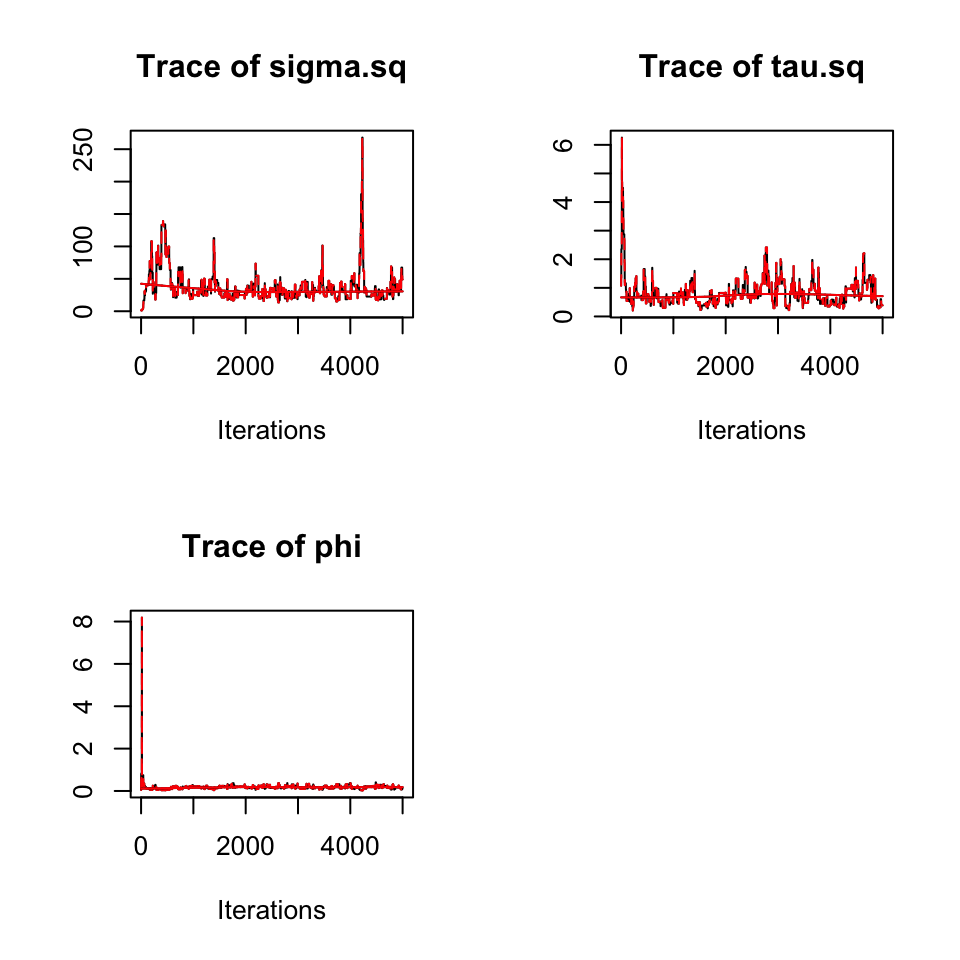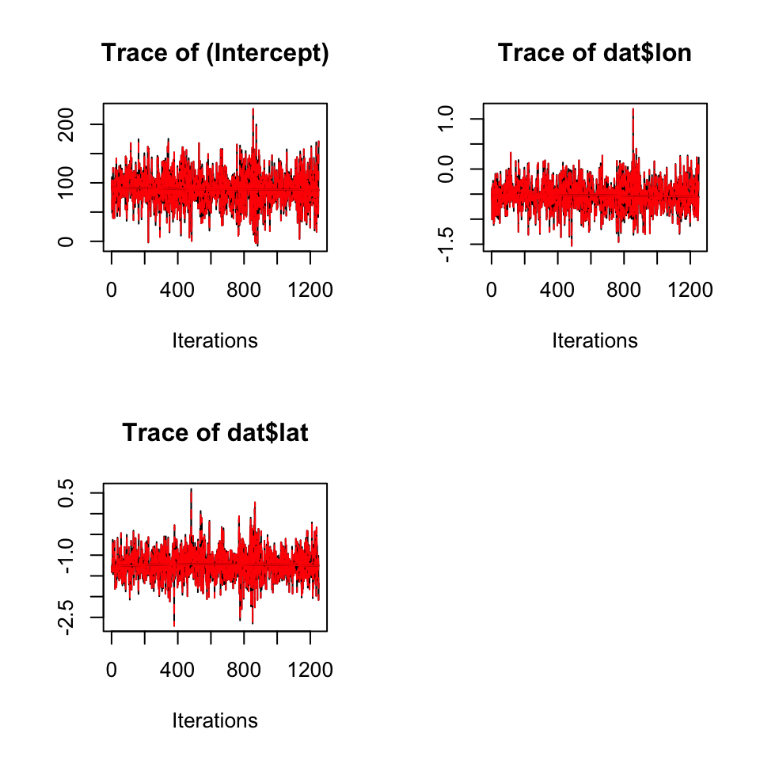
## trace plots for the matern model
fit_m <- spRecover(fit_m, start = burn.in, thin = 2, verbose = FALSE)
theta.samps <- mcmc.list(fit_m$p.theta.samples, fit_m$p.theta.samples)
plot(theta.samps, density = FALSE)
beta.samps <- mcmc.list(fit_m$p.beta.recover.samples, fit_m$p.beta.recover.samples)
plot(beta.samps, density = FALSE)
round(summary(theta.samps)$quantiles, 3)## 2.5% 25% 50% 75% 97.5%
## sigma.sq 14.437 20.865 25.640 32.910 62.267
## tau.sq 0.538 1.029 1.430 1.917 3.239
## phi 0.167 0.335 0.472 0.648 1.495
## nu 0.602 0.819 1.033 1.425 4.846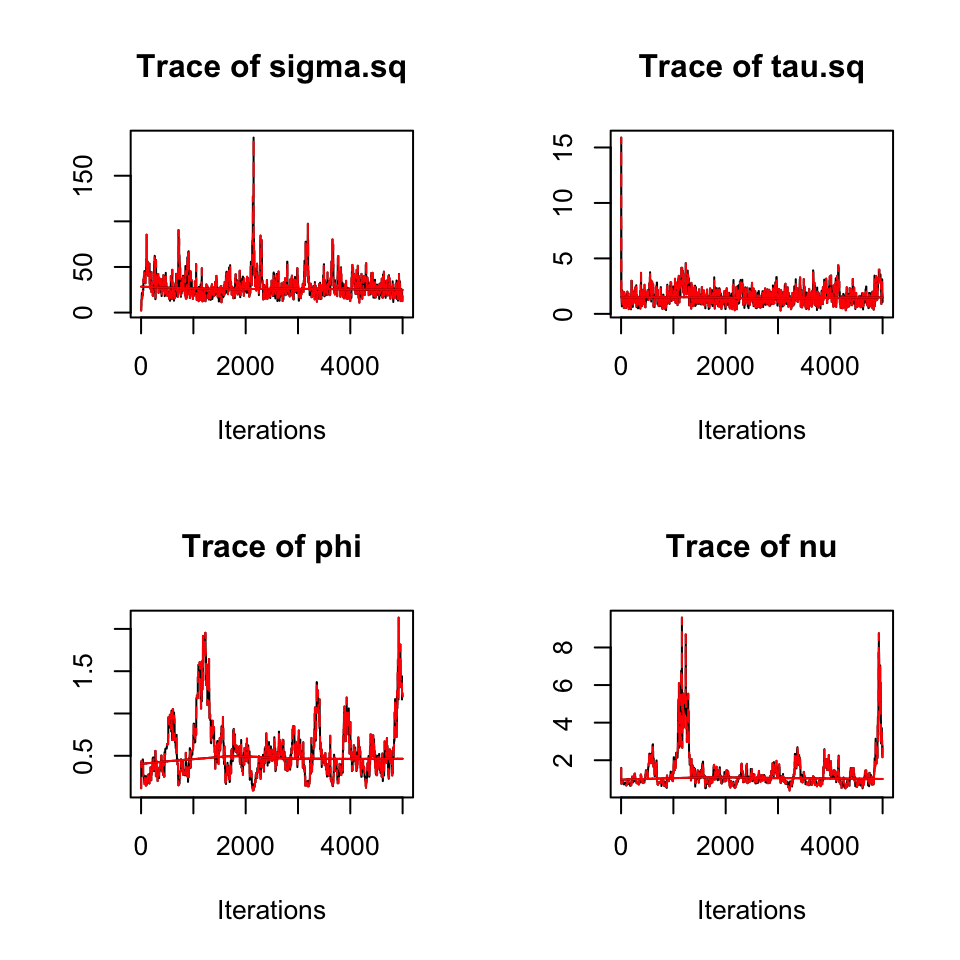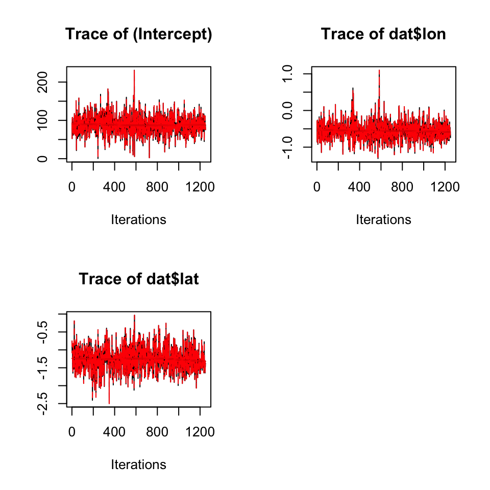
## recover the spatial random effects
fit_e_w <- fit_e$p.w.recover.samples
fit_m_w <- fit_m$p.w.recover.samples
## recover the spatial random effects (eta's in our class notation)
w.samps <- cbind(fit_e_w, fit_m_w)
w.summary <- apply(w.samps, 1, function(x) {
quantile(x, prob = c(0.025, 0.5, 0.975))
})Next we can genereate predictions for the exponential model
states <- map_data("state")
pred_coords <- as.data.frame(
expand.grid(
seq(min(dat$lon), max(dat$lon), length = 100),
seq(min(dat$lat), max(dat$lat), length = 100)
)
)
colnames(pred_coords) <- c("lon", "lat")
## predict using the tuned Matern fit
preds <- spPredict(
fit_m,
start = burn.in,
thin = 10,
pred.coords = cbind(pred_coords$lon, pred_coords$lat),
pred.covars = cbind(1, pred_coords$lon, pred_coords$lat)
)
## Calculate the prediction means and variances
pred_coords$pred_mean <- apply(preds$p.y.predictive.samples, 1, mean)
pred_coords$pred_var <- apply(preds$p.y.predictive.samples, 1, var)
## calculate 95% credible intervals for the predictions
pred.summary <- apply(preds$p.y.predictive.samples, 1, function(x) {
quantile(x, prob = c(0.025, 0.5, 0.975))
})
ggplot(data = pred_coords, aes(x = lon, y = lat, fill = pred_mean)) +
geom_raster() +
geom_polygon(data = states, aes(x = long, y = lat, group = group),
colour = "black", fill = NA) +
scale_fill_viridis_c(option = "plasma") +
ggtitle("Predicted Average July max Temperature in 1990") +
coord_fixed(xlim = range(dat$lon), ylim = range(dat$lat), ratio = 1.3)
ggplot(data = pred_coords, aes(x = lon, y = lat, fill = pred_var)) +
geom_raster() +
geom_polygon(data = states, aes(x = long, y = lat, group = group),
colour = "black", fill = NA) +
scale_fill_viridis_c(option = "plasma") +
ggtitle("Average July max Temperature prediction variance in 1990") +
coord_fixed(xlim = range(dat$lon), ylim = range(dat$lat), ratio = 1.3)## ----------------------------------------
## General model description
## ----------------------------------------
## Model fit with 136 observations.
##
## Prediction at 10000 locations.
##
## Number of covariates 3 (including intercept if specified).
##
## Using the matern spatial correlation model.
##
## -------------------------------------------------
## Sampling
## -------------------------------------------------
## Sampled: 100 of 251, 39.44%
## Sampled: 200 of 251, 79.28%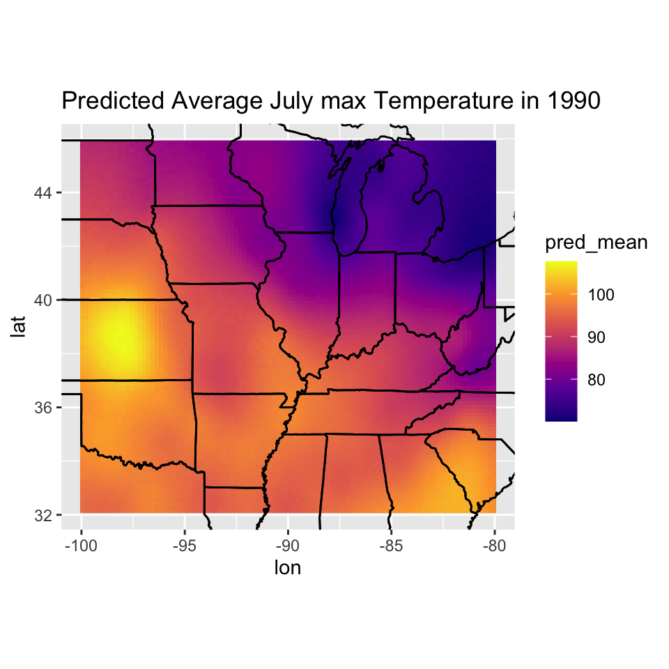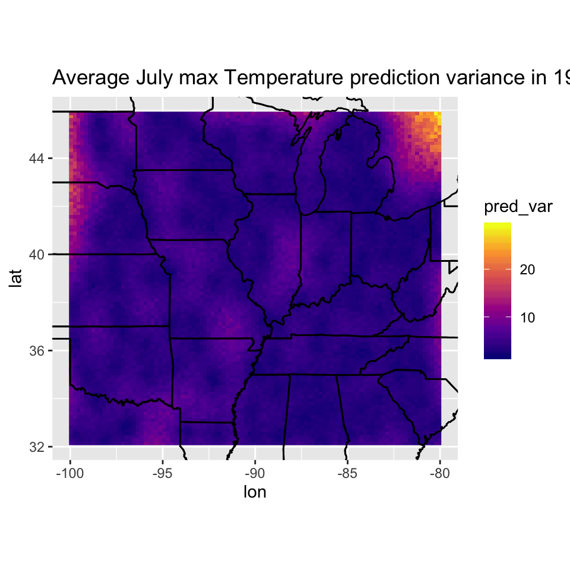
Note these variances are higher than the MLE estimates (potentially by a lot – link to MLE fits day 11)
20.3 Global vs. Local Basis function
- simulate some data
set.seed(44)
n <- 1000
sigma <- 0.2
x <- seq(0, 1, length.out = n)
Sigma <- exp( - rdist(x)^2 / 0.02)
## Gaussian covariance with a small amount of "error"
mu <- c(rmvn(1, rep(0, n), Sigma + 1e-10 * diag(n)))
y <- mu + rnorm(n, 0, sigma)
dat <- data.frame(
x = x,
y = y,
mu = mu
)
ggplot(data = dat, aes(x = x, y = mu)) +
geom_line(color = "red") +
geom_point(aes(x = x, y = y))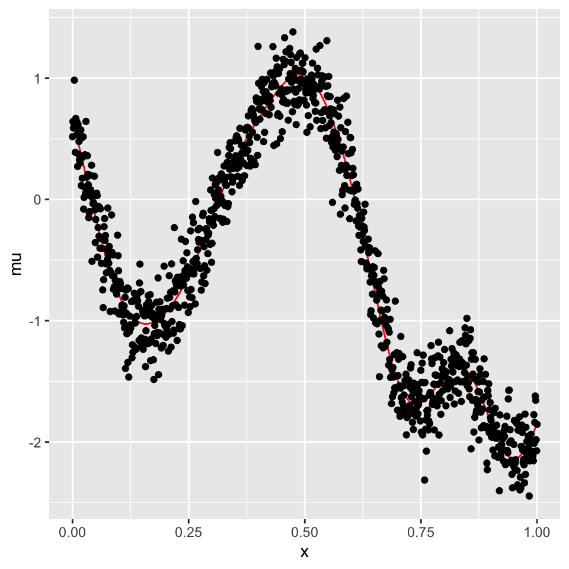
20.3.1 An example global basis: Fourier Basis
make_fourier_basis <- function(x, num_freq) {
# if (!is.integer(num_freq)) {
# stop("num_freq must be an odd integer")
# }
# if (num_freq %% 2 == 0) {
# stop("num_freq must be an odd integer")
# }
X_fourier <- cbind(
1,
do.call(
cbind,
sapply(
1:((num_freq - 1) / 2), function(i) {
cbind(sin(2 * i * pi * x), cos(2 * i * pi * x))
},
simplify = FALSE
)
)
)
return(X_fourier)
}
X_fourier <- make_fourier_basis(x, num_freq = 5)
dat <- data.frame(
x = x,
y = y,
mu = mu,
X_fourier = c(X_fourier),
basis = factor(rep(1:ncol(X_fourier), each = n))
)
ggplot(data = dat, aes(x = x, y = y)) +
# geom_point() +
geom_line(aes(x = x, y = X_fourier, group = basis, color = basis)) +
scale_color_viridis_d(option = "magma") +
theme_dark()
## plot the basis with fitted coefficients
dat$fitted_basis <- c(
sapply(1:ncol(X_fourier), function(i) X_fourier[, i] * fit$coefficients[i])
)
ggplot(data = dat, aes(x = x, y = y)) +
geom_point() +
geom_line(aes(x = x, y = fitted_basis, color = basis, group = basis)) +
ggtitle("Weighted Fourier Basis functions")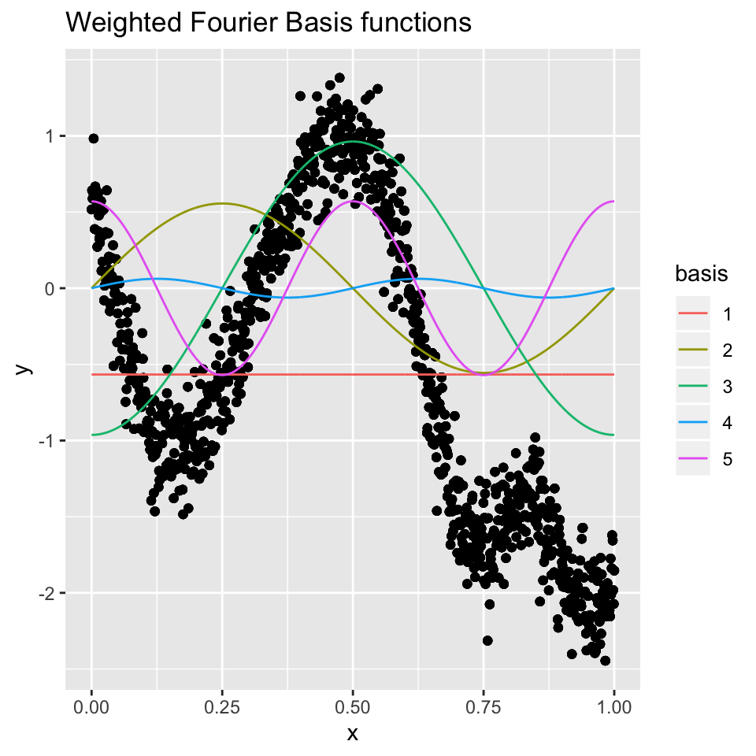
## calculate the fitted function -- the sum of the bases
dat$mu_hat <- apply(sapply(1:ncol(X_fourier), function(i) X_fourier[, i] * fit$coefficients[i]), 1, sum)
ggplot(data = dat, aes(x = x, y = y)) +
geom_point() +
geom_line(aes(x = x, y = mu_hat), color = "red", lwd = 2) +
geom_line(aes(x = x, y = mu), color = "blue", lwd = 2) +
ggtitle("Fitted function vs. simulated function")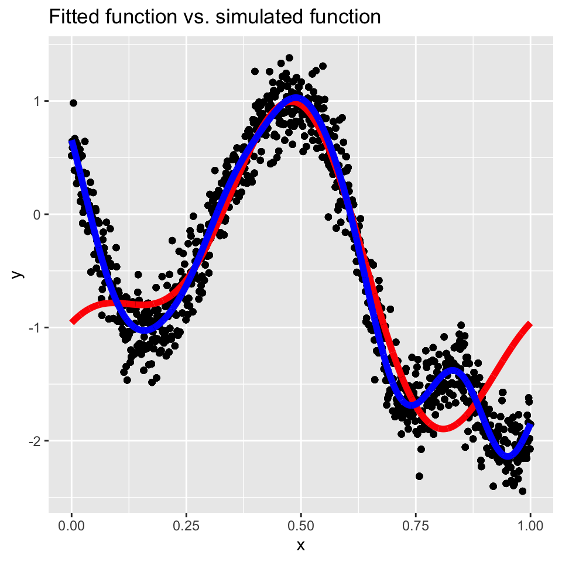
- The Fourier basis is global
## [1] 4e-0420.4 example local basis
B-splines are piecewise polynomial functions
degrees of freedom are the number of functions
- More degrees of freedom – more “wiggly” fit – potential for overfitting
## B-splines
X_bs <- bs(x, intercept = TRUE, df = 6)
dat <- data.frame(
x = x,
y = y,
mu = mu,
X_bs = c(X_bs),
basis = factor(rep(1:ncol(X_bs), each = n))
)
ggplot(data = dat, aes(x = x, y = y)) +
# geom_point() +
geom_line(aes(x = x, y = X_bs, group = basis, color = basis)) +
scale_color_viridis_d(option = "magma") +
theme_dark()
## plot the basis with fitted coefficients
dat$fitted_basis <- c(
sapply(1:ncol(X_bs), function(i) X_bs[, i] * fit$coefficients[i])
)
ggplot(data = dat, aes(x = x, y = y)) +
geom_point() +
geom_line(aes(x = x, y = fitted_basis, color = basis, group = basis)) +
ggtitle("Weighted B-spline Basis functions")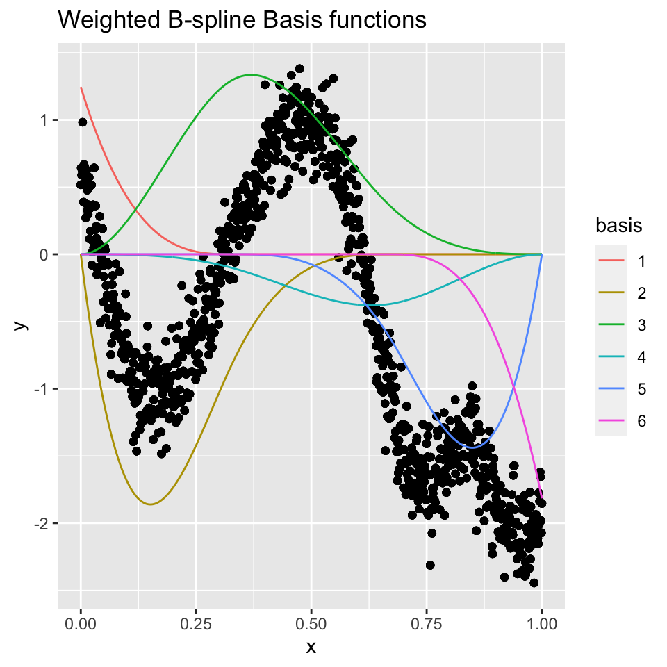
## calculate the fitted function -- the sum of the bases
dat$mu_hat <- apply(sapply(1:ncol(X_bs), function(i) X_bs[, i] * fit$coefficients[i]), 1, sum)
ggplot(data = dat, aes(x = x, y = y)) +
geom_point() +
geom_line(aes(x = x, y = mu_hat), color = "red", lwd = 2) +
geom_line(aes(x = x, y = mu), color = "blue", lwd = 2) +
ggtitle("Fitted function vs. simulated function")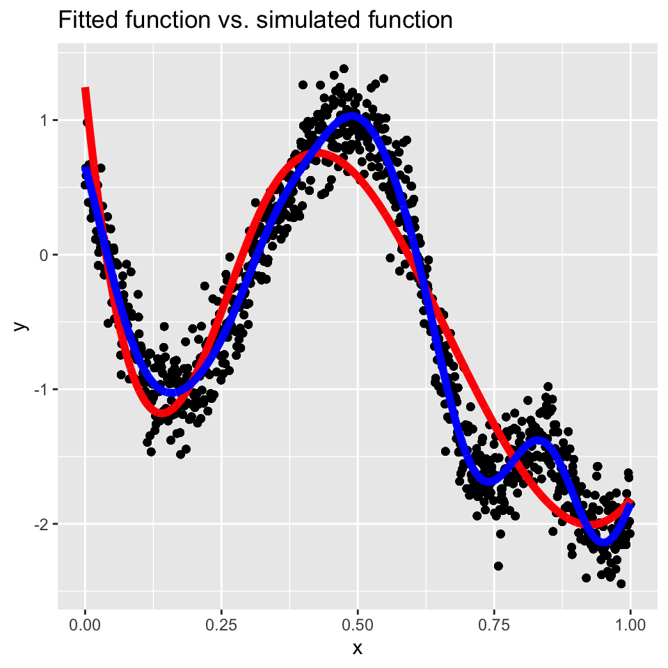
- The B-spline basis is local
## a much larger percentage of these values are zero -- can use sparse matrix
## routines to solve these equations much faster
mean(X_bs == 0)## [1] 0.334720.5 Fitting spatial models many ways
20.6 Empirical Orthogonal Functions
Recall the Karhunen-Loève expansion
Analog for PCA for spatio-temporal data
Use the sea surface temperature (SST) data in Wikle, Zammit-Mangion, and Cressie (2019)
data("SSTlandmask", package = "STRbook")
data("SSTlonlat", package = "STRbook")
data("SSTdata", package = "STRbook")Delete the values of SST that are over land (e.g. SSTlandmask is 1)
The eigen decomposition of the sample covariance of the data is equivalent to the singular value decomposition of the scaled and detrended data \(\mathbf{y}\).
\[\begin{align*} \tilde{\mathbf{y}} & \equiv \frac{1}{\sqrt{T - 1}} \left( \right) \end{align*}\]
To get a spatial EOF, we need to transform the data into space-wide format
## [1] 396 2261To use the equation above, we need to calculate the spatial mean and the number of spatial replicates and scale and detrend the data
spatial_mean <- apply(SSTdata, 1, mean)
nT <- ncol(SSTdata)
y_tilde <- 1 / sqrt(nT - 1) * (y - outer(rep(1, nT), spatial_mean))We carry out the SVD on this scaled and detrended data
which returns a list with three elements \(\mathbf{U}\) \(\mathbf{D}\) \(\mathbf{V}\)
\[\begin{align*} \tilde{\mathbf{y}} & = \mathbf{U} \mathbf{D} \mathbf{V} \end{align*}\]
V <- svd_y$v
colnames(V) <- paste0("EOF", 1:ncol(SSTdata))
EOFs <- cbind(SSTlonlat[ - delete_rows, ], V)
glimpse(EOFs[, 1:6, ])## Rows: 2,261
## Columns: 6
## $ lon <dbl> 154, 156, 158, 160, 162, 164, 166, 168, 170,…
## $ lat <dbl> -29, -29, -29, -29, -29, -29, -29, -29, -29,…
## $ EOF1 <dbl> -0.0049151, -0.0014123, 0.0002459, 0.0014550…
## $ EOF2 <dbl> -1.213e-02, -2.276e-03, 2.298e-03, 2.304e-03…
## $ EOF3 <dbl> -0.02882, -0.02553, -0.01933, -0.01906, -0.0…
## $ EOF4 <dbl> 8.541e-05, 6.726e-03, 8.591e-03, 1.026e-02, …Plot the EOFs
ggplot(data = EOFs, aes(x = lon, y = lat, fill = EOF1)) +
geom_raster() +
scale_fill_viridis_c(option = "magma") +
coord_fixed(ratio = 1.3) +
theme_bw() +
xlab("Longitude (deg)") +
ylab("Latitude (deg)") +
ggtitle("First EOF")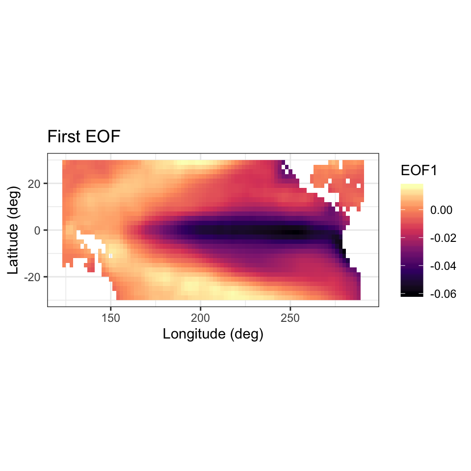
ggplot(data = EOFs, aes(x = lon, y = lat, fill = EOF2)) +
geom_raster() +
scale_fill_viridis_c(option = "magma") +
coord_fixed(ratio = 1.3) +
theme_bw() +
xlab("Longitude (deg)") +
ylab("Latitude (deg)") +
ggtitle("Second EOF")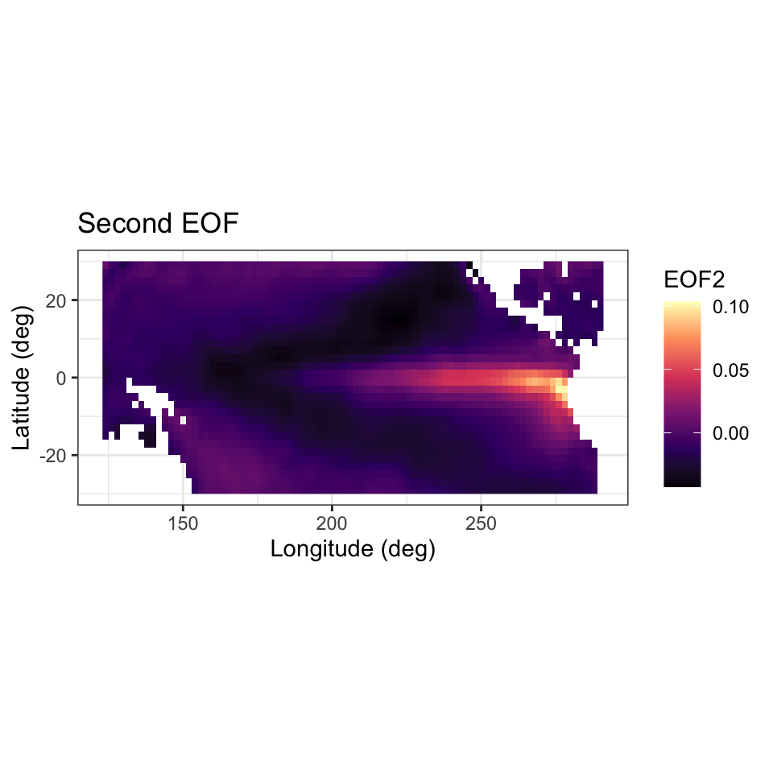
- Let’s assume I have data for January 1970.
Model the data using the first few EOFs as basis functions
mod <- lm(y ~ EOF1, data = EOFs)
summary(mod)
plot(EOFs$y, predict(mod), main = "Fitted vs. Predicted")
abline(0, 1, col = "red")##
## Call:
## lm(formula = y ~ EOF1, data = EOFs)
##
## Residuals:
## Min 1Q Median 3Q Max
## -2.0443 -0.2771 0.0635 0.3283 1.0750
##
## Coefficients:
## Estimate Std. Error t value Pr(>|t|)
## (Intercept) 0.2824 0.0111 25.5 <2e-16 ***
## EOF1 -7.9894 0.5259 -15.2 <2e-16 ***
## ---
## Signif. codes:
## 0 '***' 0.001 '**' 0.01 '*' 0.05 '.' 0.1 ' ' 1
##
## Residual standard error: 0.455 on 2259 degrees of freedom
## Multiple R-squared: 0.0927, Adjusted R-squared: 0.0923
## F-statistic: 231 on 1 and 2259 DF, p-value: <2e-16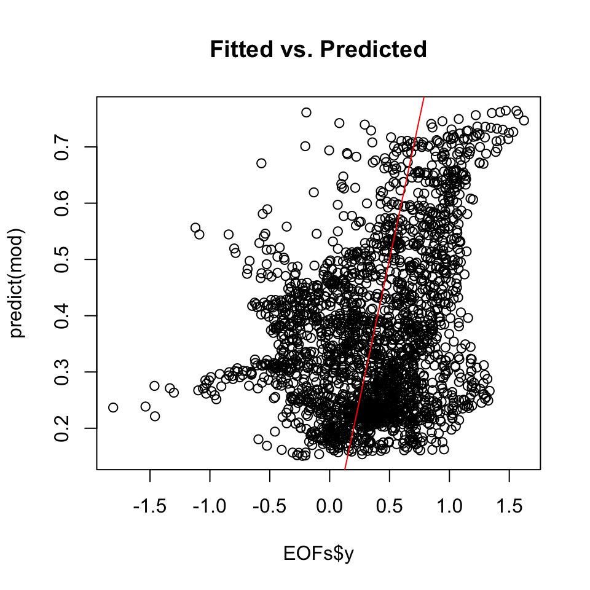
mod <- lm(y ~ EOF1 + EOF2 + EOF3 + EOF4 + EOF5, data = EOFs)
summary(mod)
plot(EOFs$y, predict(mod), main = "Fitted vs. Predicted")
abline(0, 1, col = "red")##
## Call:
## lm(formula = y ~ EOF1 + EOF2 + EOF3 + EOF4 + EOF5, data = EOFs)
##
## Residuals:
## Min 1Q Median 3Q Max
## -1.6775 -0.2141 0.0033 0.2330 0.8828
##
## Coefficients:
## Estimate Std. Error t value Pr(>|t|)
## (Intercept) -0.2095 0.0217 -9.67 <2e-16 ***
## EOF1 -19.7556 0.6232 -31.70 <2e-16 ***
## EOF2 -12.3421 0.6165 -20.02 <2e-16 ***
## EOF3 -11.8236 0.6720 -17.59 <2e-16 ***
## EOF4 11.3313 0.3695 30.67 <2e-16 ***
## EOF5 13.5727 0.4285 31.67 <2e-16 ***
## ---
## Signif. codes:
## 0 '***' 0.001 '**' 0.01 '*' 0.05 '.' 0.1 ' ' 1
##
## Residual standard error: 0.346 on 2255 degrees of freedom
## Multiple R-squared: 0.474, Adjusted R-squared: 0.473
## F-statistic: 407 on 5 and 2255 DF, p-value: <2e-16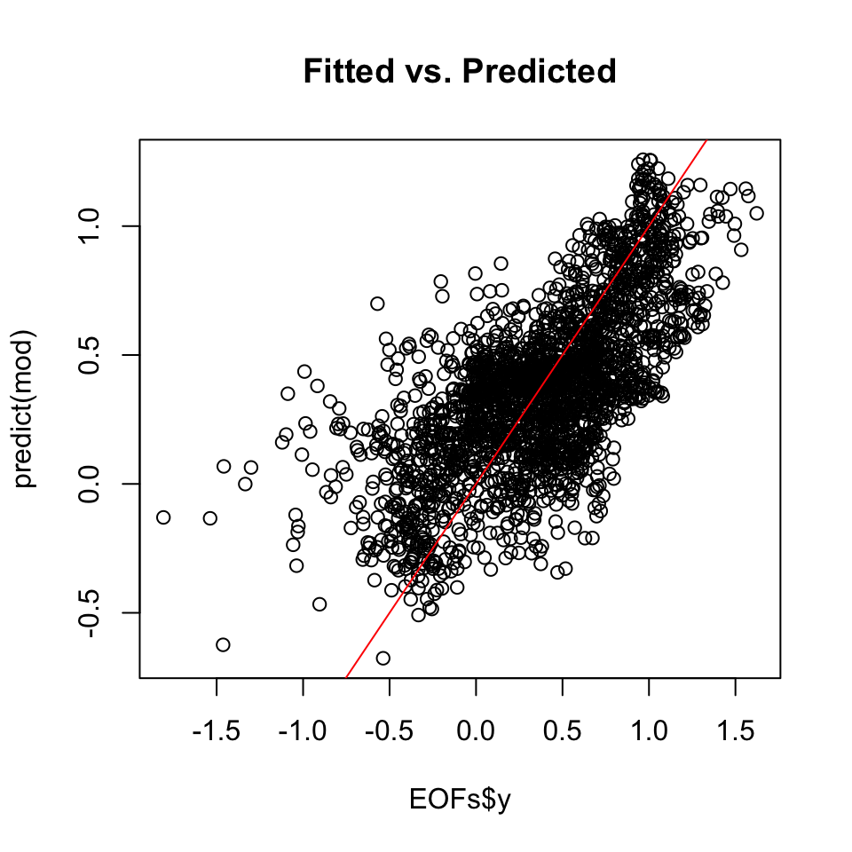
mod <- lm(y ~ EOF1 + EOF2 + EOF3 + EOF4 + EOF5 +
EOF6 + EOF7 + EOF8 + EOF9 + EOF10, data = EOFs)
summary(mod)
plot(EOFs$y, predict(mod), main = "Fitted vs. Predicted")
abline(0, 1, col = "red")##
## Call:
## lm(formula = y ~ EOF1 + EOF2 + EOF3 + EOF4 + EOF5 + EOF6 + EOF7 +
## EOF8 + EOF9 + EOF10, data = EOFs)
##
## Residuals:
## Min 1Q Median 3Q Max
## -1.505 -0.210 0.009 0.228 0.968
##
## Coefficients:
## Estimate Std. Error t value Pr(>|t|)
## (Intercept) -0.2330 0.0229 -10.16 < 2e-16 ***
## EOF1 -20.3188 0.6398 -31.76 < 2e-16 ***
## EOF2 -12.8966 0.6325 -20.39 < 2e-16 ***
## EOF3 -12.4496 0.6930 -17.97 < 2e-16 ***
## EOF4 11.4713 0.3565 32.18 < 2e-16 ***
## EOF5 13.8471 0.4241 32.65 < 2e-16 ***
## EOF6 -4.1098 0.3349 -12.27 < 2e-16 ***
## EOF7 1.5233 0.3294 4.62 4.0e-06 ***
## EOF8 -2.5908 0.3538 -7.32 3.4e-13 ***
## EOF9 0.4330 0.3308 1.31 0.191
## EOF10 0.5836 0.3365 1.73 0.083 .
## ---
## Signif. codes:
## 0 '***' 0.001 '**' 0.01 '*' 0.05 '.' 0.1 ' ' 1
##
## Residual standard error: 0.329 on 2250 degrees of freedom
## Multiple R-squared: 0.525, Adjusted R-squared: 0.523
## F-statistic: 249 on 10 and 2250 DF, p-value: <2e-16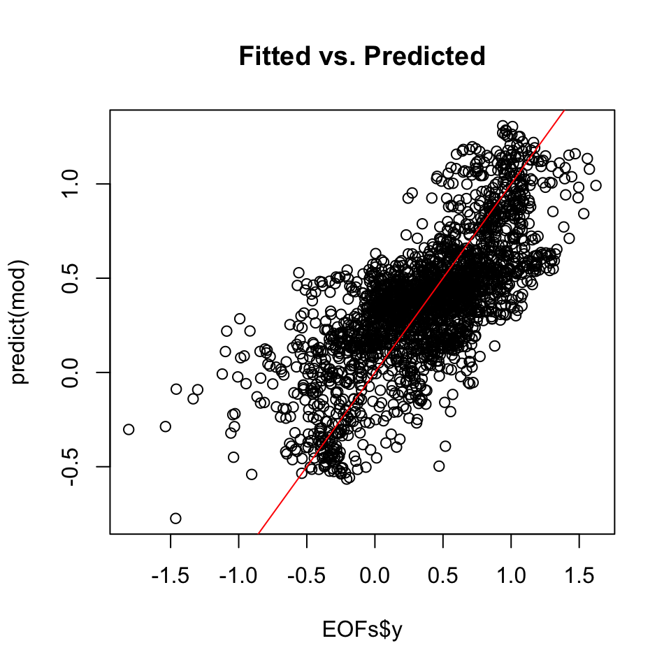
mod <- lm(y ~ EOF1 + EOF2 + EOF3 + EOF4 + EOF5 +
EOF6 + EOF7 + EOF8 + EOF9 + EOF10 +
EOF11 + EOF12 + EOF13 + EOF14 + EOF15 +
EOF16 + EOF17 + EOF18 + EOF19 + EOF20, data = EOFs)
summary(mod)
plot(EOFs$y, predict(mod), main = "Fitted vs. Predicted")
abline(0, 1, col = "red")##
## Call:
## lm(formula = y ~ EOF1 + EOF2 + EOF3 + EOF4 + EOF5 + EOF6 + EOF7 +
## EOF8 + EOF9 + EOF10 + EOF11 + EOF12 + EOF13 + EOF14 + EOF15 +
## EOF16 + EOF17 + EOF18 + EOF19 + EOF20, data = EOFs)
##
## Residuals:
## Min 1Q Median 3Q Max
## -0.9760 -0.1509 0.0125 0.1632 0.6419
##
## Coefficients:
## Estimate Std. Error t value Pr(>|t|)
## (Intercept) -0.1694 0.0228 -7.44 1.4e-13 ***
## EOF1 -18.7965 0.5955 -31.56 < 2e-16 ***
## EOF2 -11.3979 0.5879 -19.39 < 2e-16 ***
## EOF3 -10.7575 0.6516 -16.51 < 2e-16 ***
## EOF4 11.0929 0.2766 40.10 < 2e-16 ***
## EOF5 13.1056 0.3585 36.55 < 2e-16 ***
## EOF6 -4.2775 0.2486 -17.21 < 2e-16 ***
## EOF7 1.5256 0.2412 6.32 3.1e-10 ***
## EOF8 -2.2324 0.2732 -8.17 5.0e-16 ***
## EOF9 0.3487 0.2431 1.43 0.152
## EOF10 0.3939 0.2506 1.57 0.116
## EOF11 -0.4529 0.2419 -1.87 0.061 .
## EOF12 -1.6805 0.2417 -6.95 4.7e-12 ***
## EOF13 1.4899 0.2412 6.18 7.8e-10 ***
## EOF14 -1.2705 0.2442 -5.20 2.1e-07 ***
## EOF15 -1.9499 0.2422 -8.05 1.3e-15 ***
## EOF16 3.8331 0.2975 12.88 < 2e-16 ***
## EOF17 -3.7016 0.2470 -14.99 < 2e-16 ***
## EOF18 3.7071 0.2597 14.27 < 2e-16 ***
## EOF19 -5.5411 0.2420 -22.90 < 2e-16 ***
## EOF20 5.5816 0.2487 22.45 < 2e-16 ***
## ---
## Signif. codes:
## 0 '***' 0.001 '**' 0.01 '*' 0.05 '.' 0.1 ' ' 1
##
## Residual standard error: 0.241 on 2240 degrees of freedom
## Multiple R-squared: 0.747, Adjusted R-squared: 0.744
## F-statistic: 330 on 20 and 2240 DF, p-value: <2e-16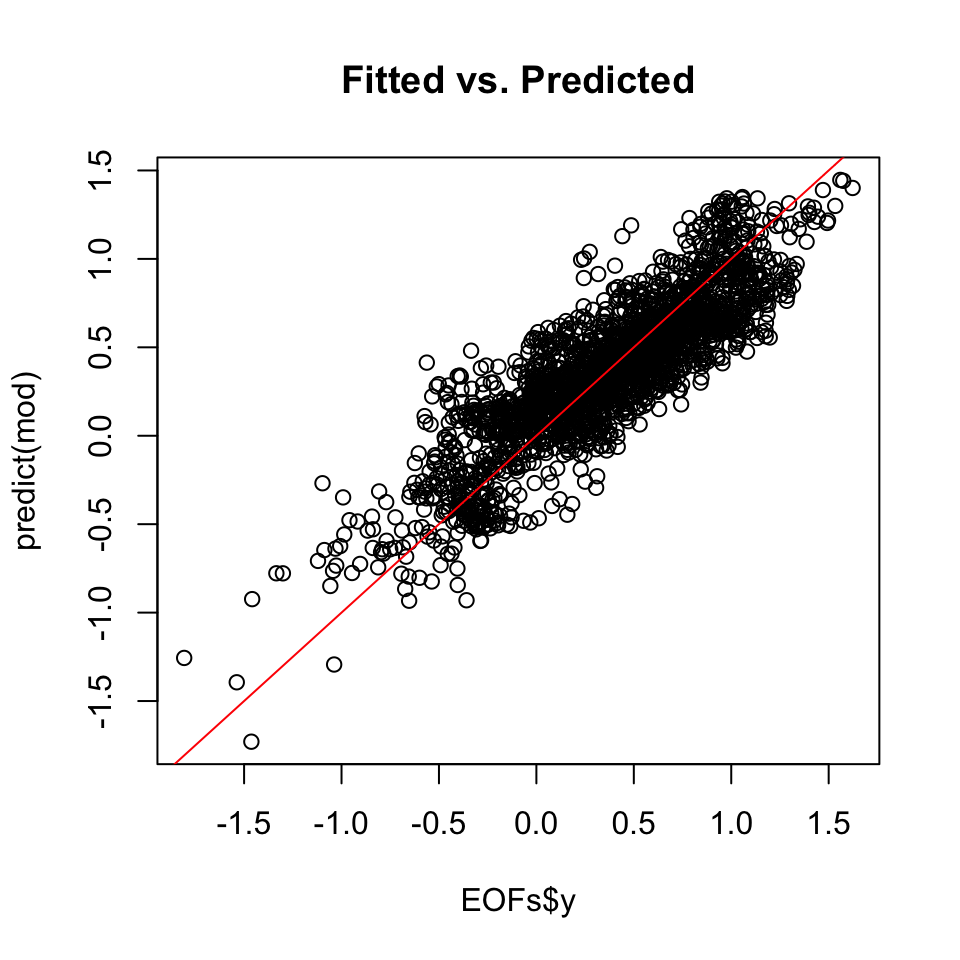
Disadvantages
- Calculation of the SVD scales with \(O(n^3)\)
- Each of the EOFs are global (almost always nonzero)
20.7 Spatial modeling with mgcv package
Use the same temperature data
data("NOAA_df_1990")
## add a factor variable for left_join
NOAA_df_1990$id_factor <- factor(NOAA_df_1990$id)
dat <- NOAA_df_1990 %>%
subset(year == 1990 & month == 7 & proc == "Tmax") %>%
group_by(id_factor) %>%
summarize(mean_Tmax = mean(z)) #
## add back in the lat/lon variables
dat <- NOAA_df_1990 %>%
subset(year == 1990 & month == 7 & proc == "Tmax" & day == 1) %>%
left_join(dat, by = "id_factor")
fit <- gam(z ~ lon + lat + s(lon, lat, bs = "tp", k = 30), data = dat)
# tensor product of a 2-d thin plate regression spline and 1-d cr spline ##
## Method: GCV Optimizer: magic
## Smoothing parameter selection converged after 5 iterations.
## The RMS GCV score gradient at convergence was 0.0005041 .
## The Hessian was positive definite.
## Model rank = 30 / 32
##
## Basis dimension (k) checking results. Low p-value (k-index<1) may
## indicate that k is too low, especially if edf is close to k'.
##
## k' edf k-index p-value
## s(lon,lat) 29 24 0.97 0.3
## generate model predictions
pred_coords <- as.data.frame(
expand.grid(
seq(min(dat$lon), max(dat$lon), length = 100),
seq(min(dat$lat), max(dat$lat), length = 100)
)
)
colnames(pred_coords) <- c("lon", "lat")
preds <- predict(fit, newdata = pred_coords, se.fit = TRUE)
pred_coords$pred_mean <- preds$fit
pred_coords$pred_var <- preds$se.fit^2
ggplot(data = pred_coords, aes(x = lon, y = lat, fill = pred_mean)) +
geom_raster() +
geom_polygon(data = states, aes(x = long, y = lat, group = group),
colour = "black", fill = NA) +
scale_fill_viridis_c(option = "plasma") +
ggtitle("Predicted Average July max Temperature in 1990") +
coord_fixed(xlim = range(dat$lon), ylim = range(dat$lat), ratio = 1.3)
ggplot(data = pred_coords, aes(x = lon, y = lat, fill = pred_var)) +
geom_raster() +
geom_polygon(data = states, aes(x = long, y = lat, group = group),
colour = "black", fill = NA) +
scale_fill_viridis_c(option = "plasma") +
ggtitle("Average July max Temperature prediction variance in 1990") +
coord_fixed(xlim = range(dat$lon), ylim = range(dat$lat), ratio = 1.3)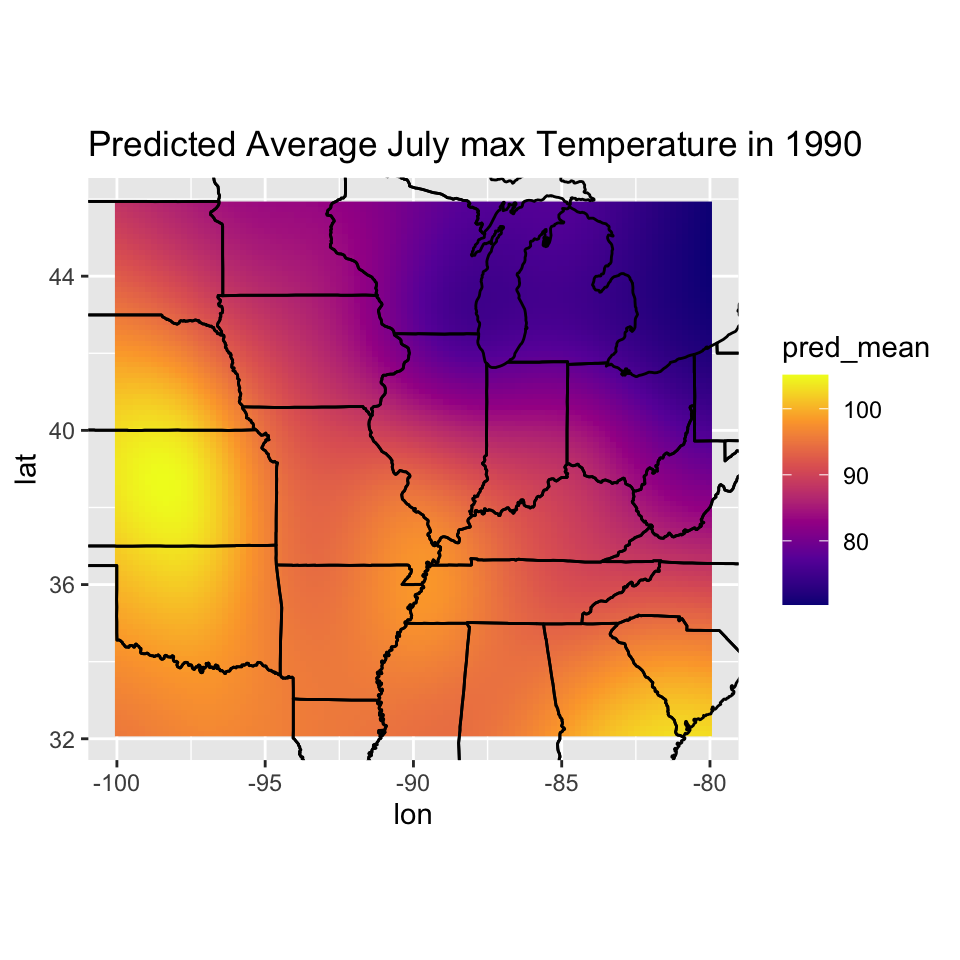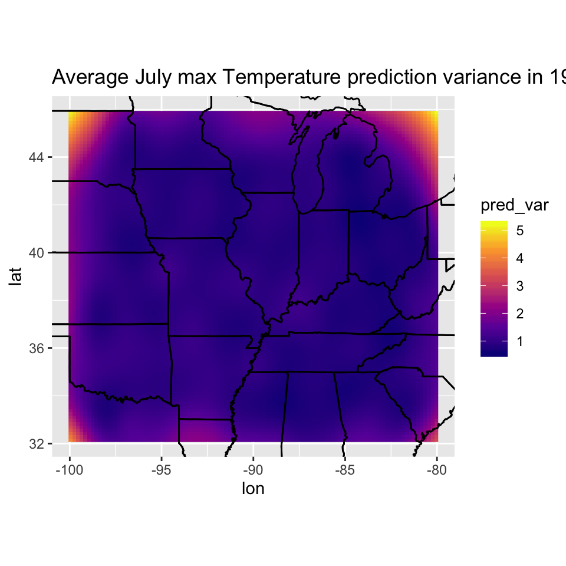
20.8 Spatial modeling with Kernels
Kernel functions can be either local or global
- Gaussian, exponential kernels are global
- Truncated Gaussian and truncated exponential are local
Kernel functions require specifying a kernel shape, a “bandwith”, and the number of “knots”.
Use the same temperature data with Gaussian Kernels
data("NOAA_df_1990")
## add a factor variable for left_join
NOAA_df_1990$id_factor <- factor(NOAA_df_1990$id)
dat <- NOAA_df_1990 %>%
subset(year == 1990 & month == 7 & proc == "Tmax") %>%
group_by(id_factor) %>%
summarize(mean_Tmax = mean(z)) #
## add back in the lat/lon variables
dat <- NOAA_df_1990 %>%
subset(year == 1990 & month == 7 & proc == "Tmax" & day == 1) %>%
left_join(dat, by = "id_factor") ## For simplicity, assume this is a square number
n_knots <- 25
knots <- expand.grid(
seq(min(dat$lon), max(dat$lon), length = sqrt(n_knots)),
seq(min(dat$lat), max(dat$lat), length = sqrt(n_knots))
)
make_kernel_basis <- function(coords, knots, kernel = "gaussian", bandwith = 1, threshold = NULL) {
if (!(kernel %in% c("gaussian", "exponential"))) {
stop("only kernels available are gaussian and exponential")
}
D <- fields::rdist(as.matrix(coords), as.matrix(knots))
X <- matrix(0, nrow(D), ncol(D))
if (kernel == "exponential") {
X <- exp (- D / bandwith)
} else if (kernel == "gaussian") {
X <- exp (- D^2 / bandwith)
}
## add in a minimum distance threshold
if (!is.null(threshold)) {
X[D > threshold] <- 0
}
return(X)
}We can plot the kernels over the domain of interest using the code below. Note that it is useful to change the bandwith parameter so that the kernel covers multiple other knots
coords <- cbind(dat$lon, dat$lat)
coords_plot <- expand.grid(
seq(min(dat$lon), max(dat$lon), length = 100),
seq(min(dat$lat), max(dat$lat), length = 100)
)
colnames(coords_plot) <- c("lon", "lat")
X_plot <- make_kernel_basis(coords_plot, knots, kernel = "gaussian", bandwith = 20)
## plot the kernel basis
dat_plot <- data.frame(
x = coords_plot[, 1],
y = coords_plot[, 2],
X = c(X_plot),
basis = factor(rep(1:ncol(X_plot), each = nrow(coords_plot)))
)
dat_knots <- data.frame(
x = knots[, 1],
y = knots[, 2]
)
ggplot(data = dat_plot, aes(x = x, y = y, fill = X)) +
geom_raster() +
# geom(aes(x = x, y = X_fourier, group = basis, color = basis)) +
scale_color_viridis_d(option = "magma") +
theme_bw() +
facet_wrap( ~ basis, ncol = sqrt(n_knots)) +
ggtitle("Kernel Basis") +
geom_point(data = dat_knots, aes(x = x, y = y), color = "red", size = 0.25, inherit.aes = FALSE) 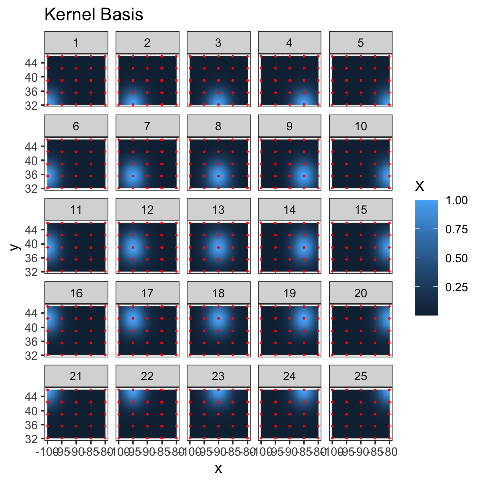
## apply the kernel basis to the data
bw <- c(1, 10, 20, 30, 40, 50, 75, 100, 1000)
check_AICc <- matrix(0, 8, length(bw))
for (j in 1:8) {
for (k in 1:length(bw)) {
n_knots <- j^2
knots <- expand.grid(
seq(min(dat$lon), max(dat$lon), length = sqrt(n_knots)),
seq(min(dat$lat), max(dat$lat), length = sqrt(n_knots))
)
X <- make_kernel_basis(coords, knots, kernel = "gaussian", bandwith = bw[k])
colnames(X) <- paste0("X", 1:ncol(X))
X <- data.frame(X)
fit <- lm(dat$z ~ ., data = X)
check_AICc[j, k] <- AIC(fit) + (2 * (j^2 + 1)^2 + 2 * (j^2 + 1)) / (nrow(X) - j^2)
}
}
matplot(check_AICc, type = 'p')
best_idx <- which(check_AICc == min(check_AICc), arr.ind = TRUE)
## the best fitting model has 5 knots and bandwidth 20
best_idx## row col
## [1,] 5 3
n_knots <- best_idx[1]^2
knots <- expand.grid(
seq(min(dat$lon), max(dat$lon), length = sqrt(n_knots)),
seq(min(dat$lat), max(dat$lat), length = sqrt(n_knots))
)
X <- make_kernel_basis(coords, knots, kernel = "gaussian", bandwith = bw[best_idx[2]])
colnames(X) <- paste0("X", 1:ncol(X))
X <- data.frame(X)
fit <- lm(dat$z ~ ., data = X)## generate model predictions
pred_coords <- as.data.frame(
expand.grid(
seq(min(dat$lon), max(dat$lon), length = 100),
seq(min(dat$lat), max(dat$lat), length = 100)
)
)
colnames(pred_coords) <- c("lon", "lat")
X_pred <- make_kernel_basis(pred_coords, knots, kernel = "gaussian", bandwith = bw[best_idx[2]])
colnames(X_pred) <- paste0("X", 1:ncol(X))
X_pred <- data.frame(X_pred)
preds <- predict(fit, newdata = X_pred, se.fit = TRUE)
dat_pred <- data.frame(
lon = pred_coords$lon,
lat = pred_coords$lat,
## prediction mean
pred_mean = preds$fit,
## prediction variance
pred_var = preds$se.fit^2
)
ggplot(data = dat_pred, aes(x = lon, y = lat, fill = pred_mean)) +
geom_raster() +
geom_polygon(data = states, aes(x = long, y = lat, group = group),
colour = "black", fill = NA) +
scale_fill_viridis_c(option = "plasma") +
ggtitle("Predicted Average July max Temperature in 1990") +
coord_fixed(xlim = range(dat$lon), ylim = range(dat$lat), ratio = 1.3)
ggplot(data = dat_pred, aes(x = lon, y = lat, fill = pred_var)) +
geom_raster() +
geom_polygon(data = states, aes(x = long, y = lat, group = group),
colour = "black", fill = NA) +
scale_fill_viridis_c(option = "plasma") +
ggtitle("Average July max Temperature prediction variance in 1990") +
coord_fixed(xlim = range(dat$lon), ylim = range(dat$lat), ratio = 1.3) 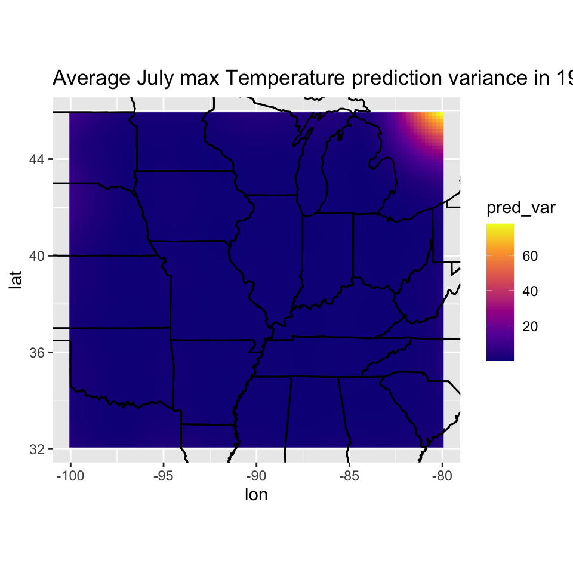
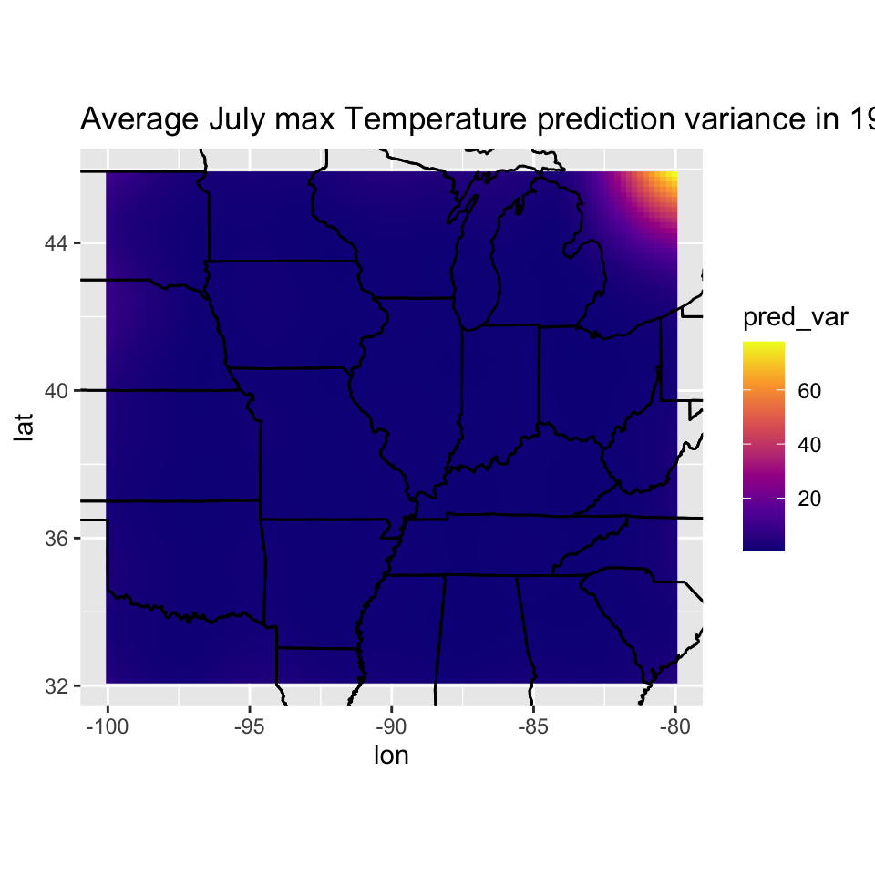
Notice that the above model is overfit – see the large variance surface. This can be resolved with penalized models (ridge, lasso, elastic net, etc). Many basis-function models show “edge effects” in the model fit. This is because at the edges of the domain there are one or two basis functions that see little data and therefore have high variability in the estimate. One can either add duplicate knots or extend the spatial domain of the knots and add a penalty term to the fit.
20.8.1 Kernel regression with a ridge penalty
- Note: glmnet doesn’t have a theoretically-motivated method for calculating prediction standard errors
## set alpha = 0 for ridge regression
X <- make_kernel_basis(coords, knots, kernel = "gaussian", bandwith = bw[best_idx[2]])
colnames(X) <- paste0("X", 1:ncol(X))
X <- data.frame(X)
cv_fit <- cv.glmnet(as.matrix(X), dat$z, alpha = 0)
fit <- glmnet(as.matrix(X), dat$z, alpha = 0, lambda = cv_fit$lambda.min)
## generate model predictions
pred_coords <- as.data.frame(
expand.grid(
seq(min(dat$lon), max(dat$lon), length = 100),
seq(min(dat$lat), max(dat$lat), length = 100)
)
)
colnames(pred_coords) <- c("lon", "lat")
X_pred <- make_kernel_basis(pred_coords, knots, kernel = "gaussian", bandwith = bw[best_idx[2]])
colnames(X_pred) <- paste0("X", 1:ncol(X))
X_pred <- data.frame(X_pred)
preds <- predict(fit, newx = as.matrix(X_pred))dat_pred <- data.frame(
lon = pred_coords$lon,
lat = pred_coords$lat,
pred_mean = c(preds)
)
ggplot(data = dat_pred, aes(x = lon, y = lat, fill = pred_mean)) +
geom_raster() +
geom_polygon(data = states, aes(x = long, y = lat, group = group),
colour = "black", fill = NA) +
scale_fill_viridis_c(option = "plasma") +
ggtitle("Predicted Average July max Temperature in 1990") +
coord_fixed(xlim = range(dat$lon), ylim = range(dat$lat), ratio = 1.3)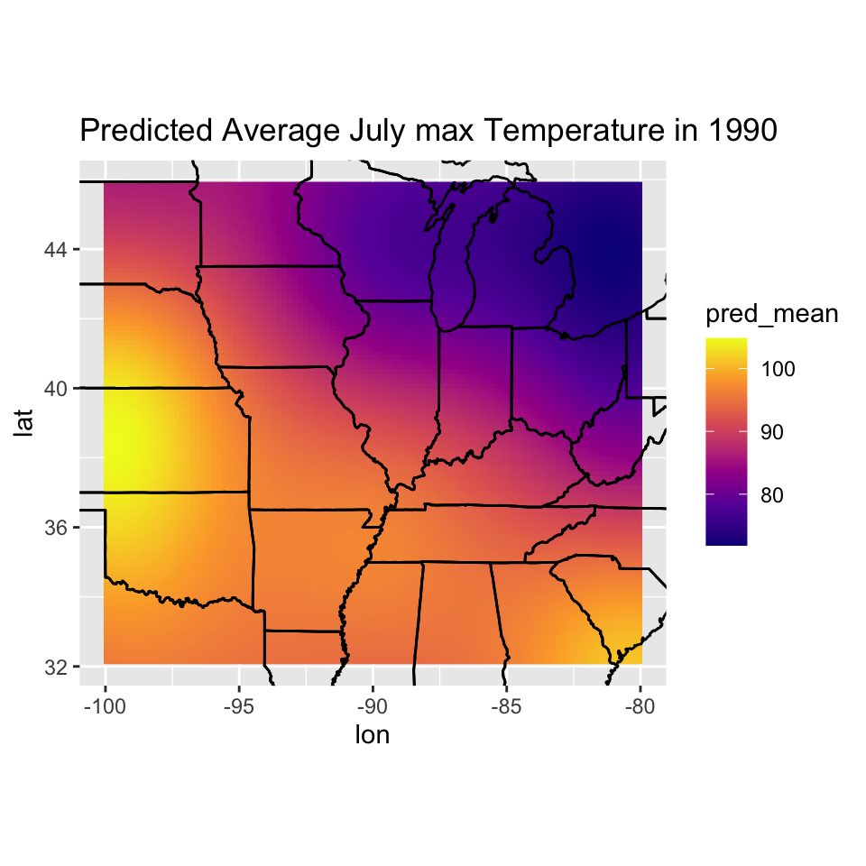
20.8.2 Kernel regression with a lasso penalty
- Note: glmnet doesn’t have a theoretically-motivated method for calculating prediction standard errors
## set alpha = 1 for ridge regression
X <- make_kernel_basis(coords, knots, kernel = "gaussian", bandwith = bw[best_idx[2]])
colnames(X) <- paste0("X", 1:ncol(X))
X <- data.frame(X)
cv_fit <- cv.glmnet(as.matrix(X), dat$z, alpha = 1)
fit <- glmnet(as.matrix(X), dat$z, alpha = 1, lambda = cv_fit$lambda.min)
## generate model predictions
pred_coords <- as.data.frame(
expand.grid(
seq(min(dat$lon), max(dat$lon), length = 100),
seq(min(dat$lat), max(dat$lat), length = 100)
)
)
colnames(pred_coords) <- c("lon", "lat")
X_pred <- make_kernel_basis(pred_coords, knots, kernel = "gaussian", bandwith = bw[best_idx[2]])
colnames(X_pred) <- paste0("X", 1:ncol(X))
X_pred <- data.frame(X_pred)
preds <- predict(fit, newx = as.matrix(X_pred))dat_pred <- data.frame(
lon = pred_coords$lon,
lat = pred_coords$lat,
pred_mean = c(preds)
)
ggplot(data = dat_pred, aes(x = lon, y = lat, fill = pred_mean)) +
geom_raster() +
geom_polygon(data = states, aes(x = long, y = lat, group = group),
colour = "black", fill = NA) +
scale_fill_viridis_c(option = "plasma") +
ggtitle("Predicted Average July max Temperature in 1990") +
coord_fixed(xlim = range(dat$lon), ylim = range(dat$lat), ratio = 1.3)
20.8.3 Truncated Kernels - local support
The kernels constructed above are globally supported (dense)
## [1] 0- Can use traditional kernels and truncate using a threshold
X_threshold <- make_kernel_basis(pred_coords, knots, kernel = "gaussian",
bandwith = bw[best_idx[2]], threshold = 10)
mean(X_threshold == 0)## [1] 0.473Can use other functions as a kernel: - Wendland basis
\[\begin{align*} \frac{(1 - d)^6 (35 d^2 + 18d + 3)}{3} I\{d < 1\} \end{align*}\]
wendland_basis <- function(d, radius) {
if (any(d < 0)) {
stop("d must be nonnegative")
}
d <- d / radius
return(((1 - d)^6 * (35 * d^2 + 18 * d + 3)) / 3 * (d < 1))
}
layout(matrix(1:4, 2, 2, byrow = TRUE))
curve(wendland_basis(abs(x - 0.25), radius = 0.15), n = 1000)
curve(wendland_basis(abs(x - 0.75), radius = 0.15), n = 1000)
curve(wendland_basis(abs(x - 0.25), radius = 0.5), n = 1000)
curve(wendland_basis(abs(x - 0.75), radius = 0.5), n = 1000)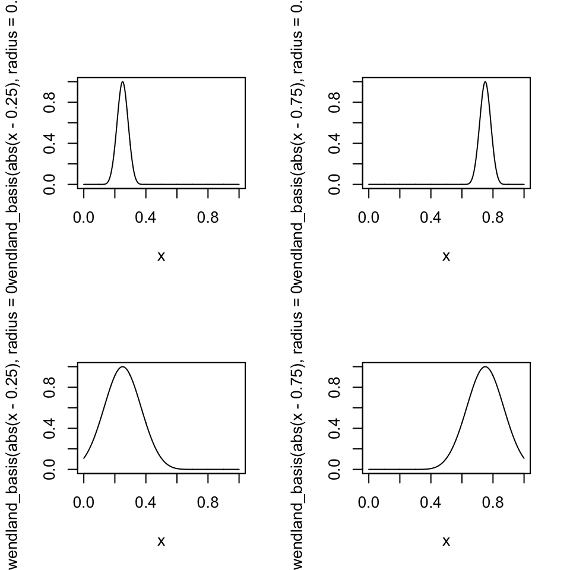
20.9 Sparse vs. Dense matrix computation
uses the
spam64packagecompute time of \(\mathbf{X}' \mathbf{X}\) for dense vs. sparse matrices
coords <- as.data.frame(
expand.grid(
seq(min(dat$lon), max(dat$lon), length = 50),
seq(min(dat$lat), max(dat$lat), length = 50)
)
)
colnames(coords) <- c("lon", "lat")
n_knots <- 25^2
knots <- expand.grid(
seq(min(dat$lon), max(dat$lon), length = sqrt(n_knots)),
seq(min(dat$lat), max(dat$lat), length = sqrt(n_knots))
)
X_dense <- make_kernel_basis(coords, knots, kernel = "gaussian",
bandwith = 5)
X_sparse <- make_kernel_basis(coords, knots, kernel = "gaussian",
bandwith = 5, threshold = 5)
mean(X_dense == 0)
mean(X_sparse == 0)
## convert to a sparse matrix format
X_sparse <- as.spam(X_sparse)
## calcuate t(X) %*% X for dense and sparse matrices
bm <- microbenchmark(
crossprod(X_dense, X_dense),
crossprod.spam(X_sparse, X_sparse),
times = 10
)
bm
plot(bm)## [1] 0
## [1] 0.7948
## Unit: milliseconds
## expr min lq mean
## crossprod(X_dense, X_dense) 1029.7 1030.7 1034.5
## crossprod.spam(X_sparse, X_sparse) 139.1 139.6 140.3
## median uq max neval
## 1032.1 1034.8 1055.2 10
## 140.5 140.7 141.2 10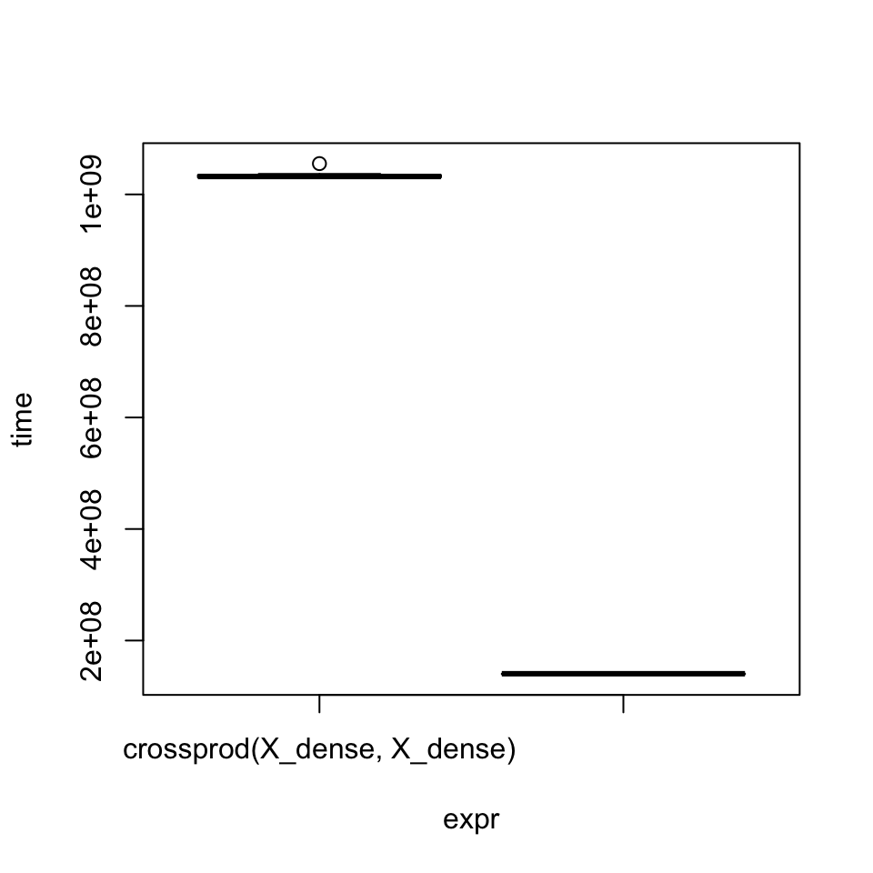
- almost a 10-fold speedup in computation time by using sparse matrix operations
References
Wikle, Christopher K, Andrew Zammit-Mangion, and Noel Cressie. 2019. Spatio-Temporal Statistics with R. CRC Press.